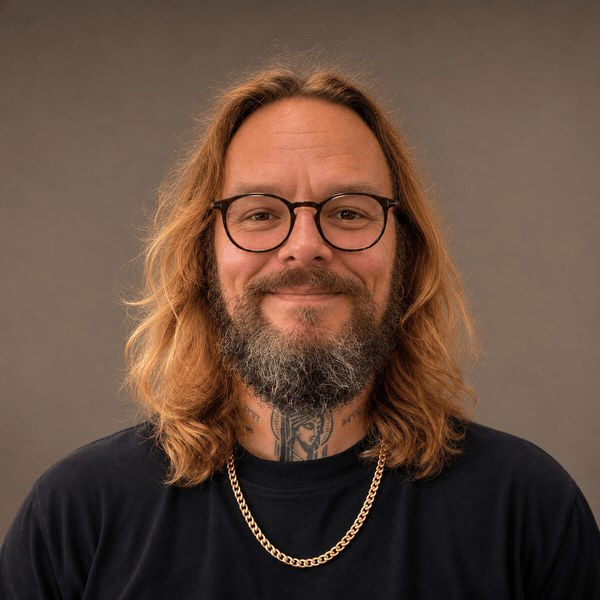

SYSTEM STATUS: WORK IN PROGRESS · SINCE 1996
Jacco de BoerAI Systems, Culture & Direction.
Thirty years at the intersection of technology, media, and public culture. Building practical AI agents, civic platforms, fiction, and cross-genre sound — from Fryslân to the Balkans.

ID: JAKOVSKI-96
LOC: FRYSLÂN / NL
01 // SYSTEMS & BUILDS
Things people actually use.
AI-assisted software, civic archives, autonomous workflows, and experimental interfaces built with precision and restraint.
02 // CHRONOLOGY 1996—2026
Three decades of signal.
Scrub through the timeline or select a milestone to inspect the archive.
2026
YEAR 31 OF 31
03 // SONIC LAB
The Mariupol Greek Groove Kompania.
Cross-genre productions colliding Rebetiko, boom-bap, and late-night tape textures. Live Web Audio analyzer.
LIVE AUDIO OSCILLOSCOPESTANDBY
Curated Spotify Rotations
04 // KINO & EUROPEAN RADAR
Cinema & coordinates.
Recent Letterboxd entries alongside an interactive telemetry map of cities lived in, roots, and fiction.
LATELY WATCHED
ALL-TIME FOUR
EUROPE // 11 ACTIVE NODES
Base
Lived
Roots
Novel
05 // HARK_OS INTERFACE
Query the second brain.
A restrained terminal interface to Hark — the personal AI assistant built to manage mail, notes, and occasional philosophy.
> SYSTEM ONLINE. SELECT A QUERY BELOW TO INSPECT.